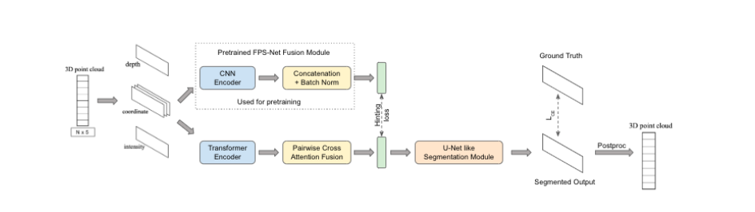
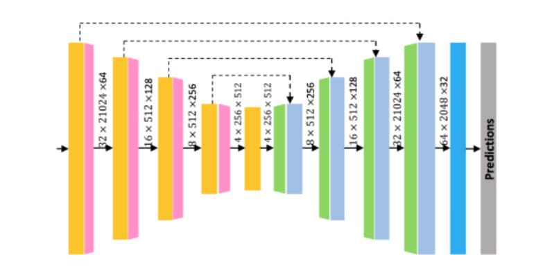
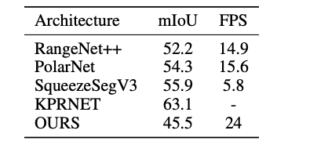

Attention-based Fusion Network for 3D Semantic Segmentation
This project presents a novel deep learning approach for semantic segmentation of LiDAR point clouds. Key aspects include:
- Projecting the 3D point cloud to 2D range images
- Applying self-attention to extract features from depth, spatial, and intensity data
- Fusing features using pairwise cross-attention
- Feeding fused features into a convolutional segmentation network
- Projecting 2D segmentation back to 3D point cloud
Challenges
Processing large-scale, unordered 3D point clouds for segmentation poses difficulties. Our approach addresses challenges like:
- Heterogeneous modalities in LiDAR data
- Irregular distributions and densities of points
- Capturing local and global context
Methods
Our pipeline involves:
- Spherical projection to range images
- Self-attention feature encoding per modality
- Cross-attention feature fusion
- Convolutional segmentation module
- Projection back to 3D space
The self- and cross-attention mechanisms allow capturing non-local relationships in the data. Convolutional networks exploit local patterns.
Results
Our model achieves a mean IoU of 45.5 on SemanticKITTI test set, at 24 FPS. This demonstrates comparable accuracy to other projection-based methods, with improved efficiency.
Ongoing work focuses on incorporating RGB data and post-processing to further improve segmentation performance.
